Infrastream by Pvotal helps platform teams automate cloud infrastructure delivery while enforcing security, governance, and control by default. It brings infrastructure management into a unified platform, giving teams a visual way to provision, monitor, and understand their cloud environments.
I joined the project as UI support for the senior UX/UI designers, working across several areas of the product to refine interfaces, interactions, and visual systems. Alongside the UI work, I contributed to UX discussions and helped explore solutions to more complex interaction and layout challenges.
I also contributed to Infrastream’s brand and communication, developing its website, promotional materials for conferences, and supporting the product’s presence on LinkedIn.
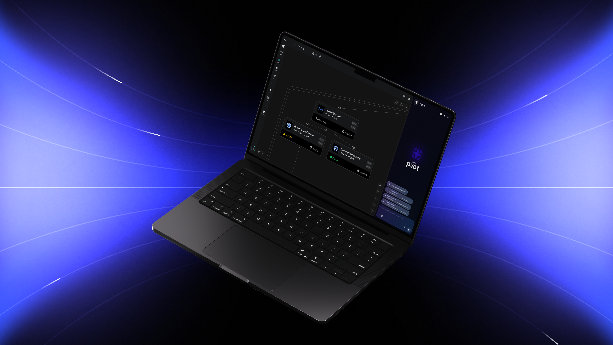
Infrastructure can quickly become difficult to navigate as the number of resources and relationships grows. The interface needed to communicate a large amount of technical information while keeping individual resources accessible and understandable.
For Infrastream, we designed a visual graph that maps these relationships into a single, navigable view, helping users understand their infrastructure at a glance while still allowing them to dive into individual resources.
I worked on the Infrastructure landing and graph view, focusing on how resources, relationships, states, and actions could be presented within a dense technical environment.
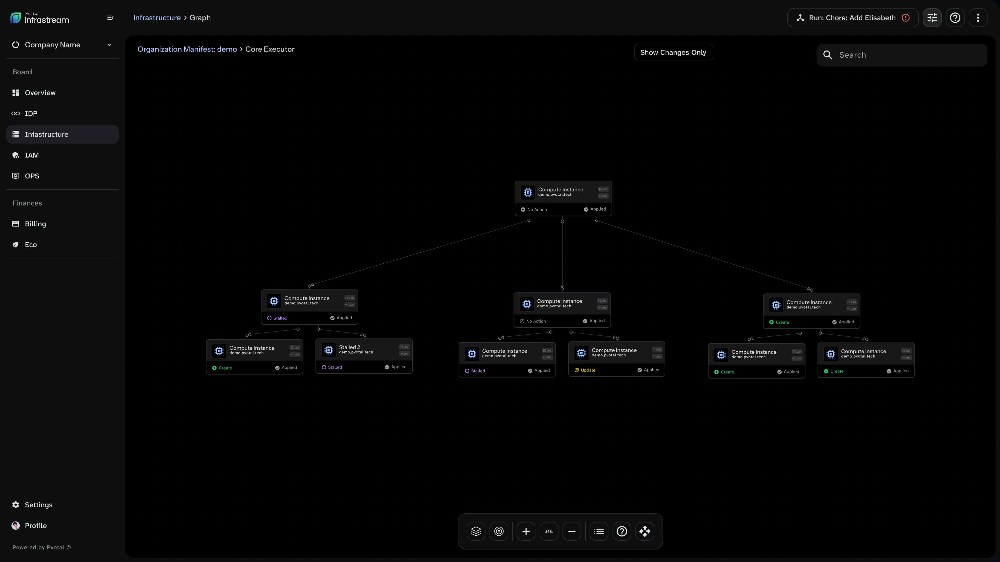
Selecting a resource reveals additional information without taking users away from the infrastructure overview. I worked on the UI of these detail views, balancing technical information with a clear visual hierarchy.
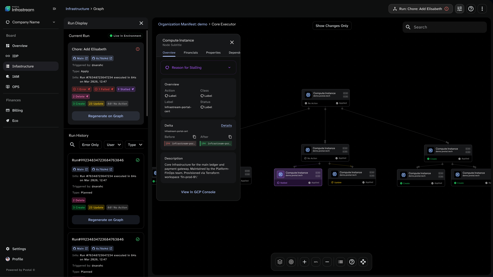
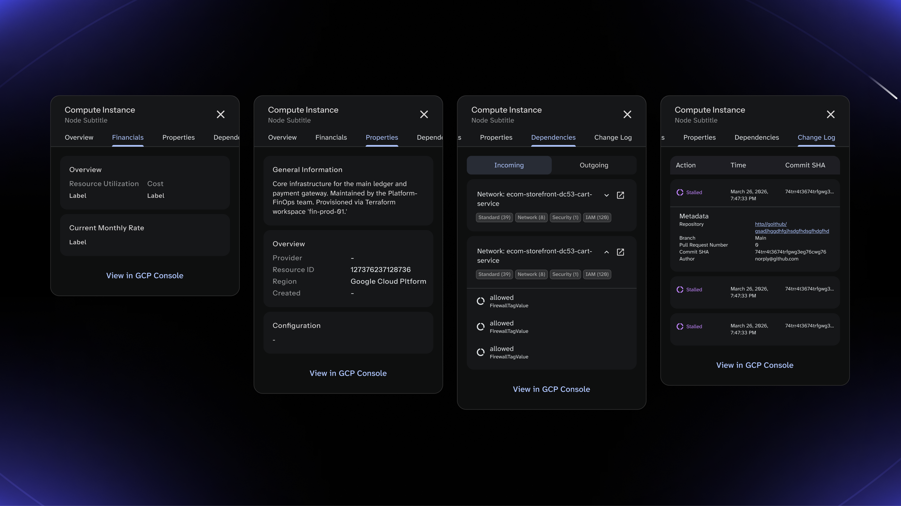
Infrastructure issues often require users to understand not only that something went wrong, but why. I worked on the UI and interaction states for stalled and failed resources, progressively revealing more information as users investigate an issue.
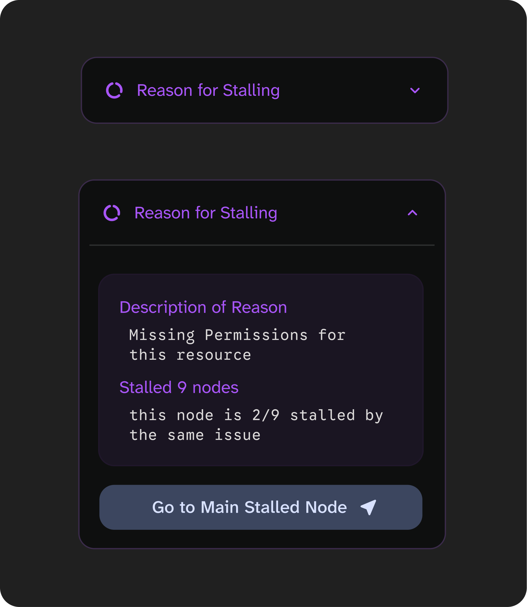
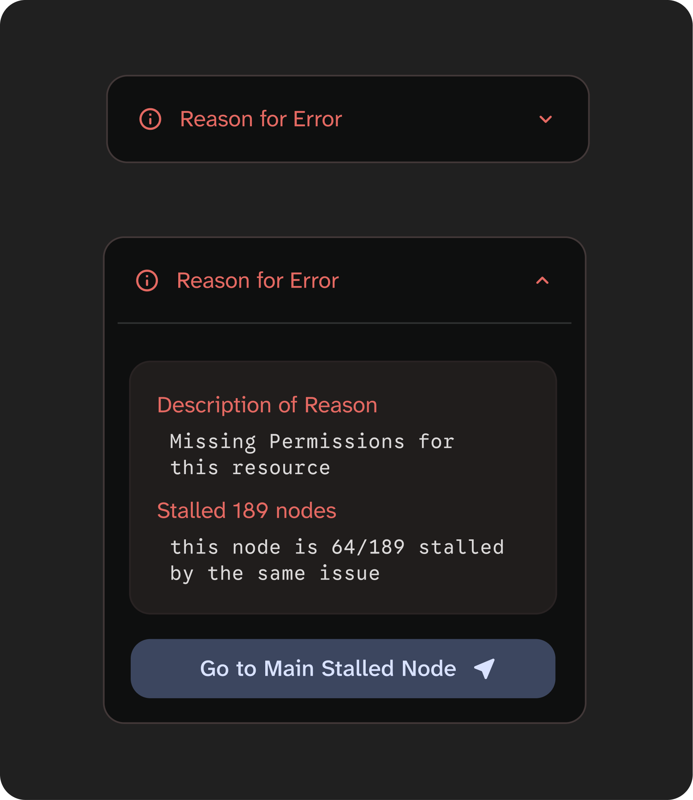
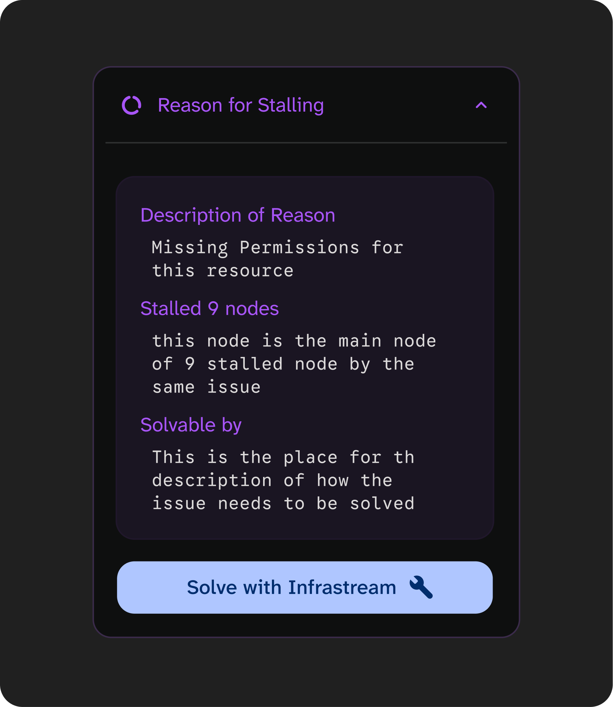
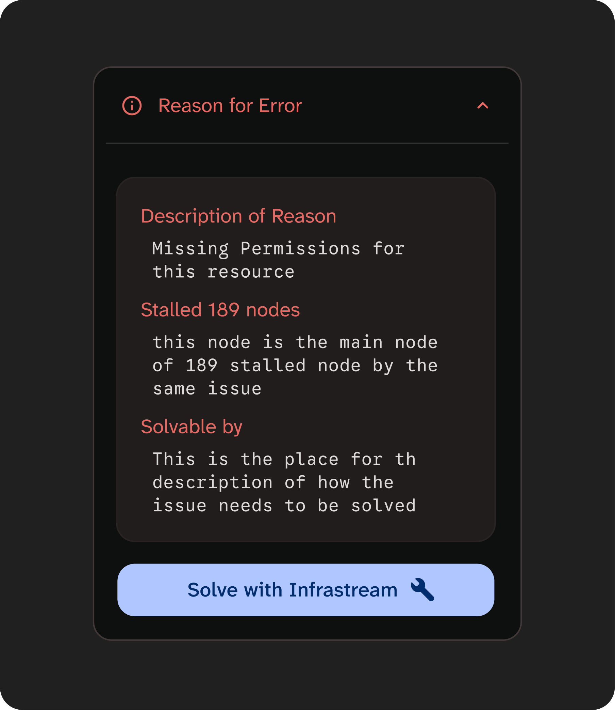
The graph is central to the Infrastream experience, but its complexity can make the first interaction difficult to understand. I contributed to the first-use experience and tutorial, helping introduce the main concepts and interactions without taking users away from the product itself.
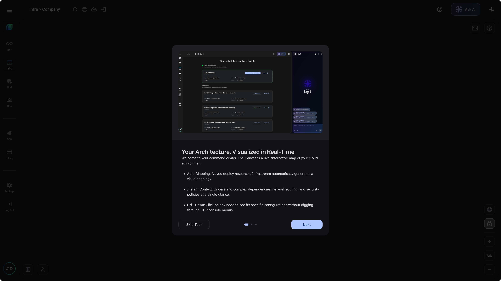
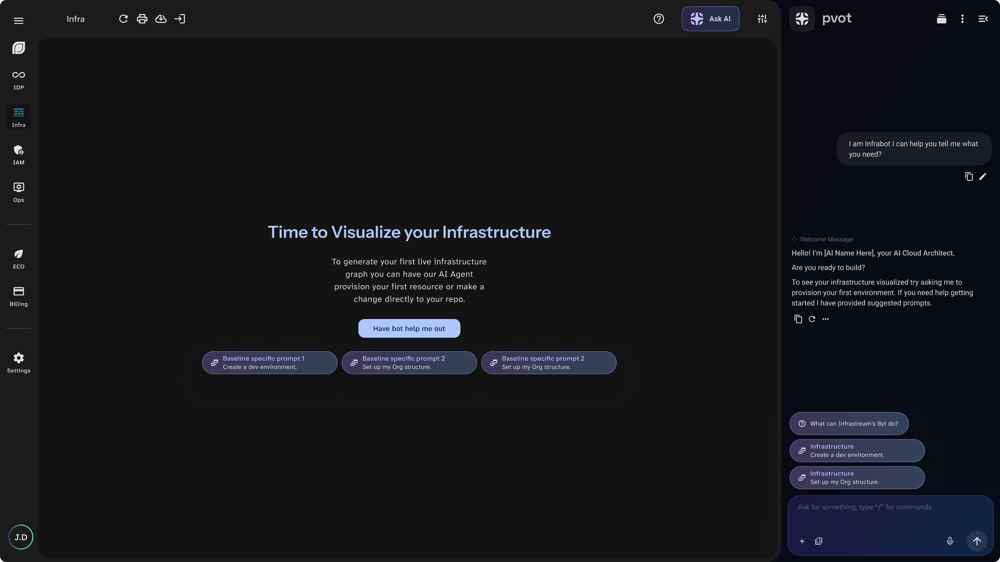
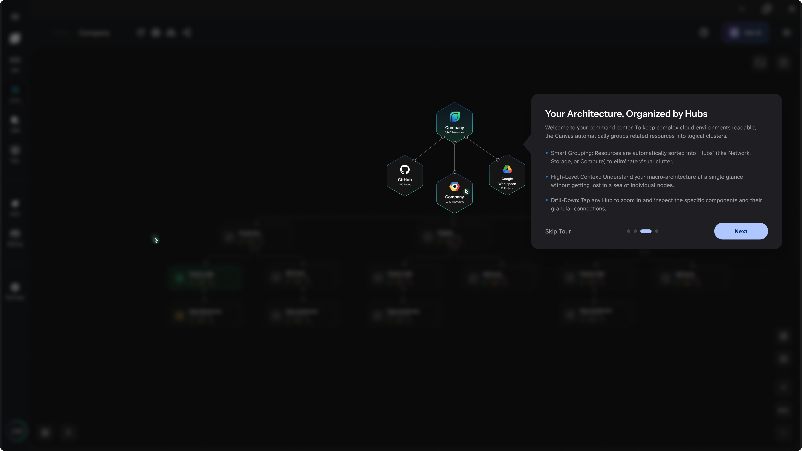
I also contributed to the IDP pipeline experience, initially refining the horizontal pipeline view and later working on a more constrained vertical version. The horizontal view needed to communicate the sequence of pipeline stages while accommodating status, actions, and supporting information. I worked on refining the UI hierarchy and distribution of information across the available space.
When the pipeline needed to work within a narrower space, simply scaling down the horizontal solution wasn’t enough. I helped explore how the layout and information hierarchy could be reorganised to preserve the relationships between stages while reducing visual density.
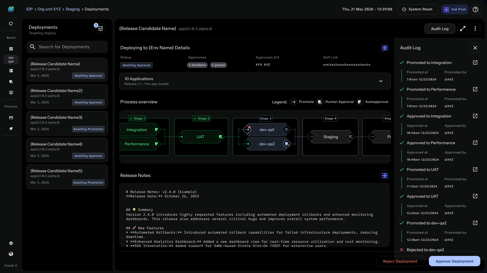
Across these product areas, I worked within Infrastream’s existing visual language, refining components, states, and interaction patterns to create a consistent interface across different workflows.
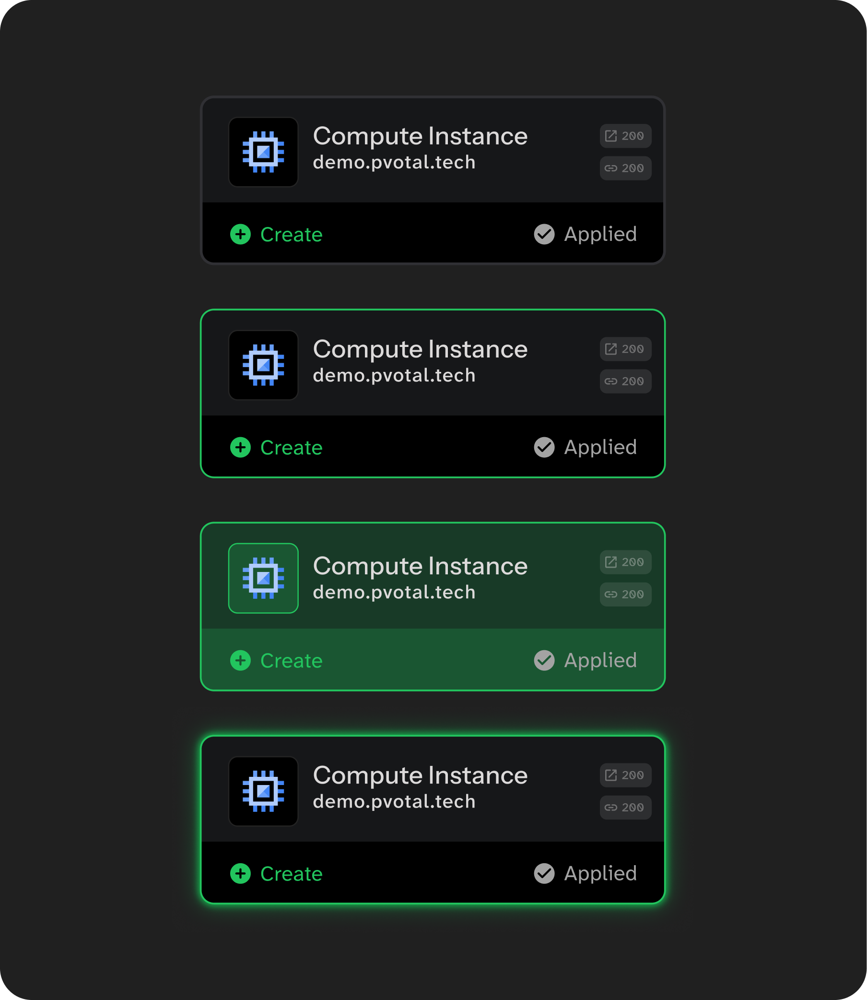
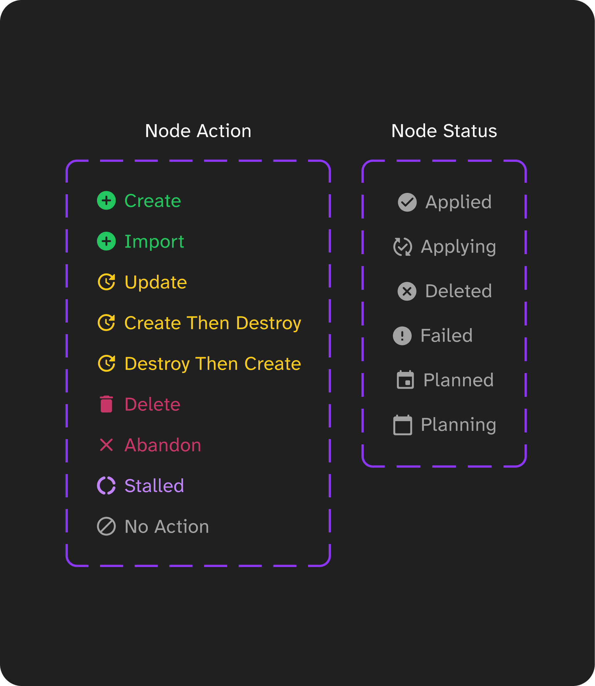
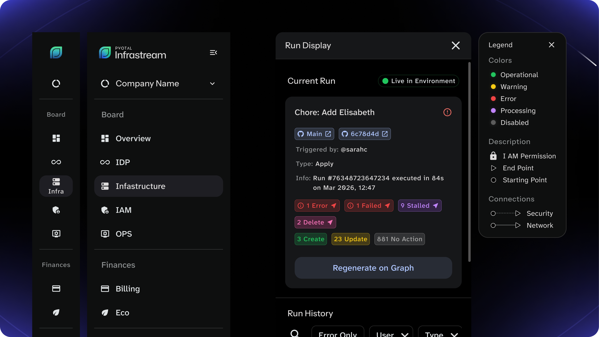
Working on Infrastream meant designing for a product where large amounts of technical information need to remain clear, accessible, and actionable. Across infrastructure graphs, system states, onboarding, and pipeline views, the work required balancing information density with hierarchy and ease of use.
The project gave me the opportunity to work within a complex product environment and strengthen how I approach interface design when structure, interaction, and visual clarity all need to work together.